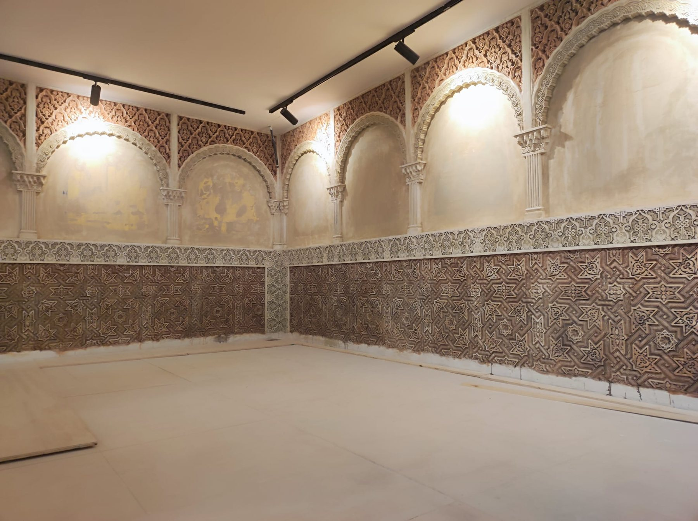
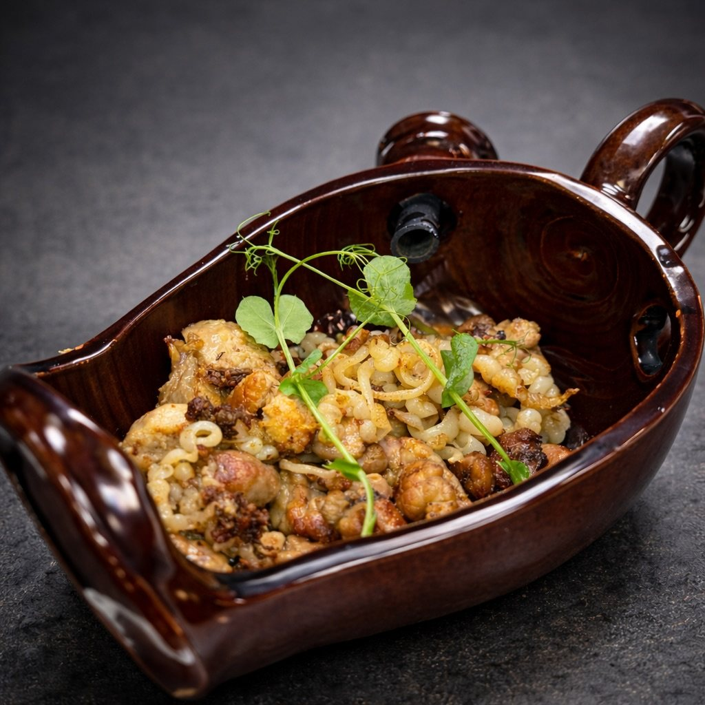
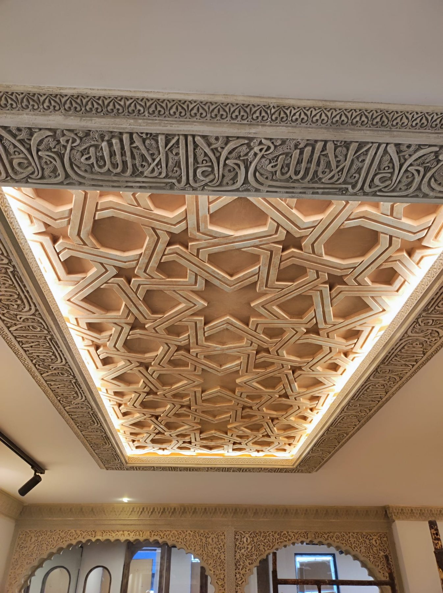
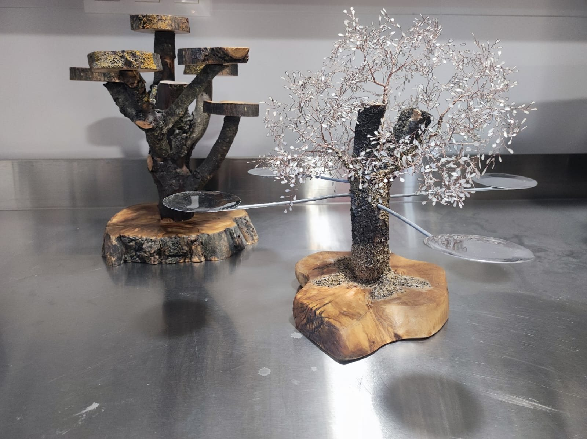

Euliser Polanco
Artista plástico cubano afincado en Oviedo. Autor de las obras de gran formato con motivos andaluces: la Bodega del Rey y la calle La Ciega de Jerez, entre otras.

1799 · 2025
Un jienense que llegó a Oviedo en 1998, un cocinero de Torreperogil y un edificio del siglo XVIII. De ahí sale todo lo demás.
El origen
Juan Carlos Revert llegó a Asturias en 1998, después de una visita que no estaba previsto que cambiara nada.
Nacido en Jaén, compaginaba su trabajo con el baile flamenco los fines de semana. En Oviedo se quedó, trabajó en el sector turístico y estuvo al frente de un negocio en Parque Principado antes de poner en marcha el proyecto que tenía en la cabeza desde hacía años: traer la esencia y los sabores de Andalucía al corazón de Asturias.
No era una idea de restaurante temático. Era una idea de restaurante andaluz de verdad, hecho con gente del sur, en el norte.
El nombre
La taranta es un palo del flamenco: un cante minero originario de la provincia de Jaén. El nombre une las dos tierras del proyecto por donde más se parecen —el trabajo bajo tierra, la mina, la cuadrilla— y no por el tópico.
“La Taranta es un palo de flamenco, originario en la provincia de Jaén” Perfil oficial del restaurante
La cocina
Al frente de los fogones está José Ignacio López, cocinero jienense formado en la provincia y vinculado al restaurante Casablanca de Torreperogil.
Se trasladó a Asturias con su familia para dirigir este proyecto con carta blanca. Eso se nota en la carta: recetario andaluz reconocible, producto de origen y técnica contemporánea sin estridencias.
La trayectoria del chef
«Producto de origen y técnica de hoy»: esa es la lectura que hace la casa del recetario andaluz, del salmorejo al arroz negro.
Ver las cartas
Mollejas de cordero, sepia, alcachofas y jugo de ostras
Galardones recogidos de la información publicada por medios locales. Pendientes de confirmar con el restaurante.

La casa
La Taranta ocupa los bajos de un edificio histórico de la calle Rosal, junto al Fontán. Su fachada data de 1799 y en la casa nació el general Salvador Díaz-Ordóñez (1845-1911).
La reforma llevó tres años. Se reprodujeron en yeso arcos nazaríes tomados de moldes originales de la Alhambra —Abencerrajes, Patio de los Leones, Comares—, se colocó el emblema nazarí en árabe y se instalaron paneles acústicos para que la música andaluza acompañe sin imponerse.
El restaurante abrió sus puertas en marzo de 2025.
Los oficios
Buena parte de lo que se ve en la casa está hecho a mano y por encargo.
Artista plástico cubano afincado en Oviedo. Autor de las obras de gran formato con motivos andaluces: la Bodega del Rey y la calle La Ciega de Jerez, entre otras.

Moldes tomados de arcos nazaríes originales del conjunto de la Alhambra, reproducidos en yeso para los arcos, zócalos y molduras de la casa.

Reprodujo el vaso de las gacelas con técnica de dorado nazarí, en exclusiva para La Taranta. Según la prensa, es el único artesano en España que emplea esa técnica.
Calle Rosal, 22-24 · Oviedo. Reserve por teléfono, por WhatsApp o desde el formulario.